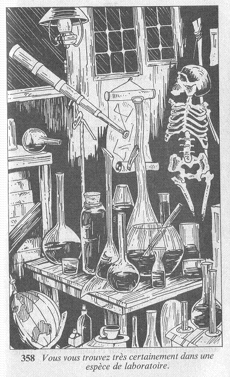

La porte s'ouvre, et vous pénétrez dans la pièce. Très vite, vous constatez avec soulagement que bien qu'elle soit encombrée d'objets hétéroclites, personne ne s'y trouve. Vous êtes certainement dans une espèce de laboratoire, car vous pouvez voir un télescope en cuivre dirigé vers le ciel, des formules mathématiques et des tables de logarithmes épinglées sur un mur, un squelette pendu à un crochet, et une table recouverte de cornues et d'éprouvettes diverses.  Certains de ces objets pourraient figurer honorablement dans un musée ! car ils datent pour le moins du siècle dernier et sont certainement de grande valeur. Vous pouvez maintenant explorer la pièce, ou la quitter.